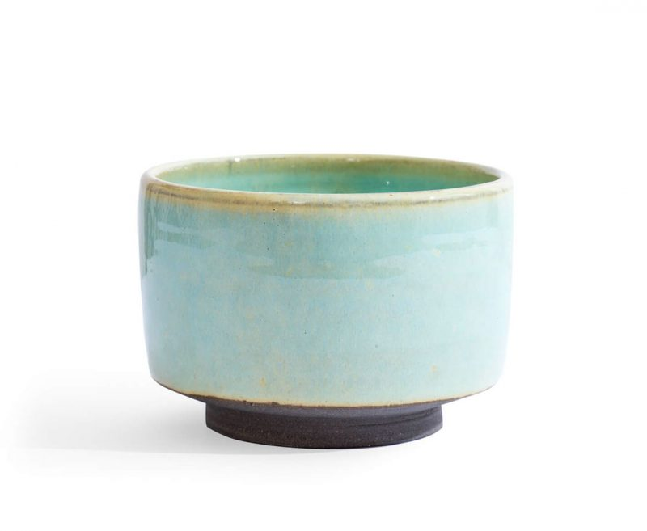
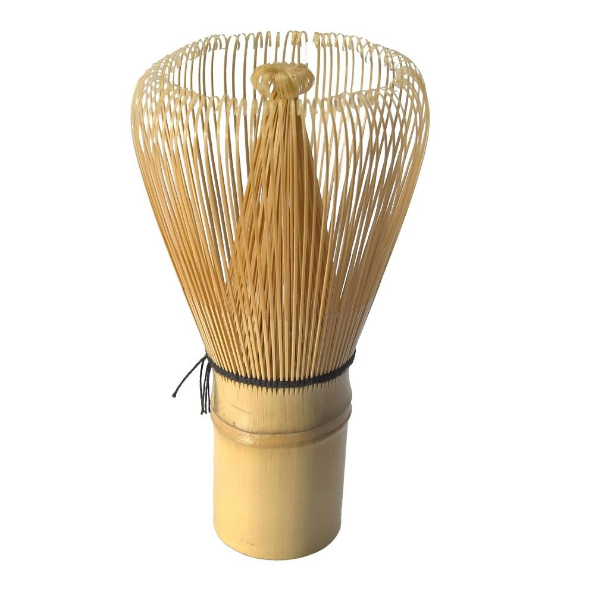
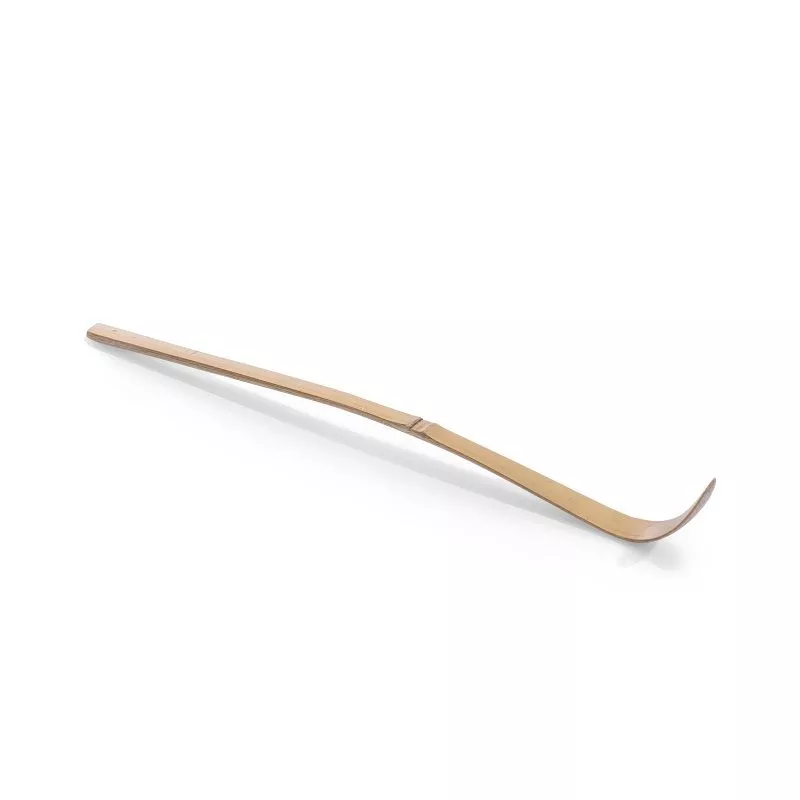

Aby zrobić matche w tradycyjny spodób, potrzebujemy kilku rzeczy:
niewielka miseczka do picia herbaty
bambusowa miotełka do spienienia matchy
bambusowa łyżeczka do matchy
Gotowe i smacznego!
Ważna podczas pienienia matchy jest odpowiednia technika.
Po pierwsze: podczas pienienia matchy chasen nie powinien szorować o dno czarki.
Po drugie:
ruch podczas pienienia powinien przypominać litere M
w taki sposób:
 O matchy
O matchy Przepisy na matche
Przepisy na matche